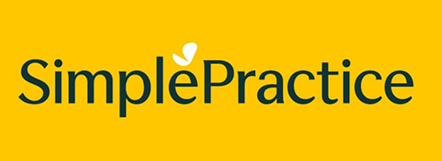
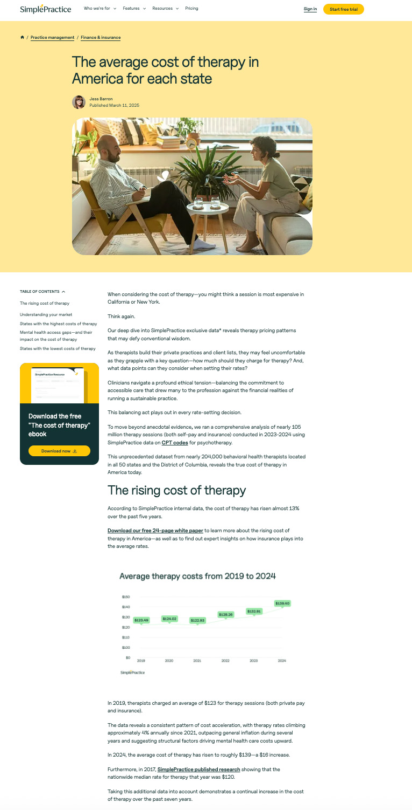

Data Journalism & Lead Generation

SimplePractice
Data Journalism • 105M Sessions Analyzed
Bylined Author & Content Strategist
Bylined article built on a comprehensive analysis of nearly 105 million therapy sessions using proprietary SimplePractice data. Part of a two-article email collection strategy with a companion gated 24-page white paper. Unprecedented dataset from nearly 204,000 behavioral health therapists across all 50 states.
105M
Sessions analyzed
204K
Therapists in dataset
Gated
24-page white paper
Featured • SimplePractice • Bylined by Jess Barron
Read the full article →

SimplePractice
Proprietary Data • 225K+ Clinicians
Author & Content Strategist
A data-driven analysis I built using proprietary billing data from 225,000+ U.S. clinicians on SimplePractice's HIPAA-compliant EHR. By identifying the 20 most common ICD-10 diagnostic codes submitted on insurance claims, the piece opened a rare window into the most prevalent mental health diagnoses across America, turning internal data into authoritative, widely-referenced editorial.
225K+
Clinicians in dataset
Top 20
ICD-10 codes analyzed
SimplePractice
Original Survey • State of Therapist Well-Being
Content Strategist & Editor
A flagship editorial anchored to original research: a survey of 550 therapists conducted for World Mental Health Day to quantify and contextualize therapist burnout. I turned the findings into a companion blog piece and the 2023 State of Therapist Well-Being Report, positioning SimplePractice as a brand that takes care of the caregivers and generating earned attention around a mission-critical industry issue.
550
Therapists surveyed
Report
2023 State of Therapist Well-Being
Data Partnership • SleepScore Labs
Author & Head of Content
Researched and wrote this data-driven article using proprietary data from partner SleepScore Labs. Became the most-viewed article on Sleep.com in 2021, demonstrating how original data partnerships can drive outsized audience engagement.
250K+
Views in first 8 months
#1
Most-viewed on Sleep.com, 2021
Product GTM & Launch Content
SimplePractice
Product GTM • AI Note Taker Launch
Content Strategist & Editor
A cornerstone piece in the go-to-market campaign for SimplePractice's AI Note Taker. Rather than leading with product features, I built trust first: addressing the real questions and anxieties clinicians and clients have about AI in a therapeutic setting. The result was launch content that established credibility and reduced friction around adoption, connecting a sensitive product story to a skeptical clinical audience.
GTM
AI Note Taker launch campaign
Trust-first
Adoption-focused positioning
SimplePractice
Product GTM • ePrescribe Adoption
Content Strategist & Editor
Product-education content supporting SimplePractice's ePrescribe feature. A clear, step-by-step guide that turns a compliance-sensitive clinical workflow into confident, actionable guidance, built to drive feature activation and reduce support friction at the moment clinicians need it most.
Adoption
Feature activation content
How-to
Compliance-sensitive workflow
SimplePractice
Product GTM • Group Therapy Scheduling
Content Strategist & Editor
A how-to guide supporting adoption of group therapy scheduling in SimplePractice. Meets clinicians at the point of need with practical steps that lower the barrier to a revenue-expanding workflow, reinforcing the platform as the operating system for a modern practice.
Adoption
Feature activation content
How-to
Revenue-expanding workflow
Clinical & Practitioner Content
SimplePractice
Clinical Content • Published Pre-Election 2024
Content Strategist & Editor
Published days before the 2024 election, this expert-sourced piece met both practitioners and their clients exactly where they were. A real-time example of content that earns trust by showing up at the right moment with clinical credibility.
SimplePractice
Sensitive Clinical Content • Editorial Judgment
Content Strategist & Editor
A demonstration of how to handle the most clinically sensitive content without sacrificing clarity or brand voice. Required careful editorial judgment, expert sourcing, and deep understanding of the practitioner audience.
Consumer Health & Equity
TherapyFinder
Health Equity • Long-form Reporting
Co-author & Editor
Commissioned, shaped, and edited this deeply reported piece on mental health access disparities for Black Americans, co-written with journalist Caron LeNoir. Drove consumers to search the directory, browse available therapists, and book appointments. Measurably improved directory usage and appointment bookings.
Science Translation • SleepScore Labs
Author & Head of Content
Researched and wrote this article with SleepScore Labs data and input from applied sleep scientist Elie Gottlieb, Ph.D. Demonstrates ability to translate complex scientific data into accessible consumer health narratives.
Video & Multimedia
Behavior Change • 8-Day Video Course
Creator & Executive Producer
Conceived, developed, and produced an original 8-day behavior change video course hosted by neurologist and sleep specialist Chris Winter, MD. Built to help audiences build better sleep habits through one small, science-backed step per day. Collected emails and built Sleep.com's email list to over 100,000 recipients.
100K+
Email subscribers generated
8 days
Behavior change course
LIVESTRONG
Short Documentary • First-Ever Video Production
Author, Host & Producer
Traveled to Mexico to research, report, and write the long-form article. Voiced and wrote the script for LIVESTRONG's first-ever 9-minute short documentary video, created to bring light to environmental issues facing the ocean.
24K
Documentary views
I also repurposed the 9-minute documentary into a 1-minute short-form social cut for Facebook, which reached 97K views organically.
On-Camera Interview Series • LIVESTRONG
YouTube Interview
On-camera interview I conducted with the Beachbody fitness trainer and creator of the INSANITY workout program.
39K views
YouTube Interview
On-camera interview I conducted live onstage at the Rose Bowl in 2018 with the celebrity trainer and entrepreneur.
13K views
YouTube Interview
On-camera interview I conducted with "The Bachelor" contestant and fitness and lifestyle influencer.
30K views
YouTube Interview
On-camera interview I conducted with the former professional tennis player at Cannes Lions.
13K views
The Content Machine I Built at SimplePractice
Beyond individual pieces, I designed the AI-augmented editorial system that produced 1,200+ pieces annually and drove 4,374 paid customer accounts. This case study walks through the pipeline architecture, AI workflows, contributor network, and measurement framework I built from scratch.
View the full case study